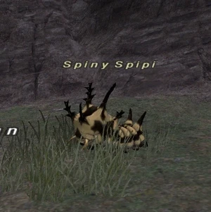

Level 75 reference · Zenith rules
|
Job: Warrior Notorious Monster |
 |

| Zone | Level | Drops | Steal | Spawns | Notes |
|---|---|---|---|---|---|
| East Sarutabaruta | 9 - 10 |
|
1 | L, H, Sc |

Notes:
- Lottery spawn from the Crawlers around I-7 to J-7.
- Also may spawn by the river a little north (I/J-6).
- Spawns every 45-120 minutes. Can take upwards of 4 hrs to spawn
- Both Spiny Spipi and the Placeholder can spawn at the other side of the hill from the tower by the river.
- On Widescan, the placeholder is the third of the group of three crawlers that pop in the area.
- Placeholder ID is 130. (Confirmed placeholder ID is 130. When Spipi spawns, placeholder 130 does not spawn, and instead, Spipi will take its place and become mob ID 131.)
- Soloable by most jobs level 10+, See testimonials.
- Nyzul Isle: The Armoury Crate it leaves behind contains a ??? Cape, which may rarely appraise into a Mist Silk Cape.
Adapted from Eden Wiki: Spiny Spipi · Contributors and history · CC BY-SA 4.0. Revision 44542. Layout, links and optional background text adapted for Zenith.